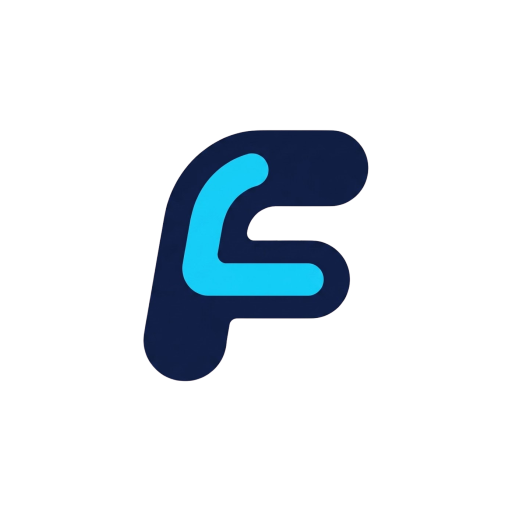

| 栏目 | 填写内容 |
|---|---|
| 作品名称 | Ludens-Flow |
| 参赛赛道 | 开放赛道 |
| 选手姓名 | 范开新 |
| Demo 链接 | github.com/franknobox/Ludens-Flow |
对游戏制作感兴趣的大学生、独立开发者及希望利用 AI 辅助创作的年轻创作者群体。他们通常具备一定的编程或设计基础，但缺乏系统化游戏开发经验，渴望以更低门槛进入游戏创作领域。

Ludens-Flow
Ludens 取自 Johan Huizinga《Homo Ludens》（游戏的人），意为"游戏者"——游戏是人的天性，也是创作的本源。
Flow 既指工作流的结构化流转（Design → PM → Engineering → Review），也指向创作者进入心流（Flow State）的理想体验。
合起来，Ludens-Flow 是让 AI 与创作者共同进入"游戏化开发心流"的结构化工作台。
Ludens-Flow 是一个面向游戏开发的 AI 多智能体结构化工作台。它将"自由聊天的 AI"转化为"有角色、有分工、有产出、有边界"的工程协作者：通过 Design、PM、Engineering、Review 等多个专业 Agent 的协作流水线，驱动用户从需求讨论、策划定稿、工程实施到评审优化的完整开发流程；同时通过 MCP 协议直接连接 Blender、Unity 等外部引擎，让 AI 不仅能"动嘴"写文档，更能"动手"操作实机。
| 功能 | 说明 |
|---|---|
| 角色化 Agent 辅导 | Design Agent 讨论玩法、PM Agent 排期收敛、Engineering Agent 输出技术方案、Review Agent 交叉审查，每个 Agent 有明确职责边界和专业提示词。 |
| 模拟开发全流程 | 内置 GDD_DISCUSS → PM_DISCUSS → ENG_DISCUSS → REVIEW → DEV_COACHING 标准流水线，支持阶段回流与人工决策节点。 |
| 工件读写与管理 | 自动生成并维护 GDD.md、PROJECT_PLAN.md、IMPLEMENTATION_PLAN.md、REVIEW_REPORT.md 等结构化工件，支持人工编辑与版本冻结。 |
| MCP 引擎集成 | 通过 Model Context Protocol 连接 Blender（已实机验证）、Unity、Godot、Unreal，支持场景操作、对象创建、文件保存等实机能力。 |
| Skills 扩展系统 | 支持外部导入自定义 Skill（skill.json + prompt.md），项目级启用，让 Agent 能力可扩展、可沉淀。 |
| GitHub 集成 | 前端可视化 GitHub 协作入口，连接代码仓库与开发流程。 |
| AIGC 快捷入口 | 统一接入图像生成、文字创作等外部 AIGC 服务，避免工具跳转。 |
| LLM 快速接入 | 支持 OpenAI、Moonshot、DeepSeek、OpenRouter 等多厂商模型，项目级路由配置，不同 Agent 可分配不同模型。 |
| 文案生成与导出 | 内置文案加工台，支持外部参考文件、实时生成状态展示、Markdown / CSV 导出。 |
| Coding 辅助 | 支持代码文件读写、目录创建、Patch 应用、路径逃逸拦截等受控工程操作。 |
┌─────────────────────────────────────────────────────────────────────┐ │ Ludens-Flow 产品架构 │ ├─────────────────────────────────────────────────────────────────────┤ │ ┌─────────────┐ ┌─────────────┐ ┌─────────────┐ ┌───────────┐ │ │ │ Web工作台 │ │ MCP引擎 │ │ AIGC/GitHub│ │ 外部Skills │ │ │ │ (Vite+React)│ │ (Blender/ │ │ 集成 │ │ 导入管理 │ │ │ │ │ │ Unity/Godot)│ │ │ │ │ │ │ └──────┬──────┘ └──────┬──────┘ └──────┬──────┘ └─────┬─────┘ │ │ └─────────────────┴─────────────────┴───────────────┘ │ │ │ │ │ ┌──────┴──────┐ │ │ │ FastAPI │ │ │ │ 服务层 │ │ │ └──────┬──────┘ │ │ │ │ │ ┌─────────────────┼─────────────────┐ │ │ │ │ │ │ │ ┌────┴────┐ ┌─────┴─────┐ ┌─────┴─────┐ │ │ │ Graph │ │ Tools │ │ State │ │ │ │ 编排引擎 │ │ 工具注册 │ │ 状态存储 │ │ │ └────┬────┘ └─────┬─────┘ └─────┬─────┘ │ │ │ │ │ │ │ ┌────┴────┐ ┌─────┴─────┐ ┌─────┴─────┐ │ │ │ Agents │ │ MCP适配器 │ │ 项目元数据 │ │ │ │多Agent层│ │引擎适配 │ │工作区管理 │ │ │ │ │ │ │ │ │ │ │ │Design │ │Blender │ │workspace/ │ │ │ │PM │ │Unity │ │projects/ │ │ │ │Engineer │ │Godot │ │skills/ │ │ │ │Review │ │Unreal │ │ │ │ │ └─────────┘ └───────────┘ └───────────┘ │ │ │ │ │ ┌──────┴──────┐ │ │ │ LLM 层 │ │ │ │多模型路由 │ │ │ │(.env+项目级) │ │ │ └─────────────┘ │ └─────────────────────────────────────────────────────────────────────┘
用户新建项目
│
▼
┌─────────────┐ ┌─────────────┐ ┌─────────────┐
│ GDD_DISCUSS │ --> │ GDD_COMMIT │ --> │ PM_DISCUSS │
│ Design Agent │ │ GDD.md 定稿 │ │ PM Agent │
│ 讨论玩法需求 │ │ │ │ 排期范围收敛 │
└─────────────┘ └─────────────┘ └──────┬──────┘
│
▼
┌─────────────┐ ┌─────────────┐ ┌─────────────┐
│ DEV_COACHING│ <-- │POST_REVIEW │ <-- │ REVIEW │
│ 开发辅导模式 │ │ 用户决策 │ │ Review Agent│
│ 工件冻结 │ │ 回流/继续 │ │ 交叉审查报告 │
└─────────────┘ └─────────────┘ └──────┬──────┘
│
▼
┌─────────────┐
│ ENG_DISCUSS │
│Engineering │
│Agent 技术方案 │
└──────┬──────┘
│
▼
┌─────────────┐
│ ENG_COMMIT │
│IMPLEMENTATION│
│_PLAN.md 定稿 │
└─────────────┘
关键交互节点：
[设置引擎连接] --> [MCP 调用 Blender 创建对象] --> [前端展示工具事件]
[设置页导入 Skill] --> [项目启用 Skill] --> [Agent 上下文加载]
[文案加工台] --> [外部参考 + AI 生成] --> [Markdown/CSV 导出]
| 对比维度 | 对话助手（如豆包） | 编程助手（如 Cursor） | 传统开发软件 | 一键生成型（如 Gambo） | Ludens-Flow |
|---|---|---|---|---|---|
| 角色分工 | 单一对话角色 | 单一编程助手 | 无 AI，纯工具 | 端到端黑盒生成 | 多 Agent 流水线，Design/PM/Eng/Review 各司其职 |
| 流程结构 | 自由对话，无流程 | 文件级编码辅助 | 人工驱动全流程 | 输入→输出，无中间过程 | 结构化阶段流转，工件驱动，支持回流决策 |
| 引擎操作 | 不能操作外部软件 | 不能操作游戏引擎 | 手动操作引擎 | 部分支持，不可控 | MCP 协议实机连接 Blender/Unity，AI 直接操作场景 |
| 用户参与 | 用户主导提问 | 用户主导编码 | 用户全手动 | 用户等待结果 | Human-in-(Agent)-Loop，深度参与开发，可编辑工件、可决策回流 |
| 学习价值 | 获取信息 | 获取代码建议 | 自学软件操作 | 无学习过程 | 在结构化协作中理解游戏开发全流程，从需求到实机的完整认知 |
| 可控性 | 低，输出随机 | 中，代码可 Review | 高，完全可控 | 极低，黑盒生成 | 高，工件冻结保护、写入权限确认、路径沙箱、阶段人工决策 |
核心差异一句话：我们不是让 AI 替你做完游戏，而是让 AI 成为你的结构化开发伙伴——有分工、有产出、有边界、能实机操作，你在每个环节都深度参与并从中学习。
Ludens-Flow 构建了一套面向复杂创意工程的认知架构级 AI 系统，其核心能力不仅限于大语言模型的文本生成，而是将多模态理解、工具使用（Tool Use）、多智能体协作（Multi-Agent Collaboration）与外部系统操控（MCP 协议）进行深度融合：
GDD、PROJECT_PLAN、IMPLEMENTATION_PLAN 等标准化工件 Schema 的结构化内容，确保可追踪、可审阅、可执行。| 用户痛点 | 传统方案局限 | Ludens-Flow AI 解法 |
|---|---|---|
| 开发门槛高，缺乏系统学习路径 | 看教程、读文档，知识点零散 | 多 Agent 流水线即学习路径：用户在参与 Design → PM → Engineering 的过程中，自然理解游戏开发的标准流程与交付物要求，边做边学。 |
| 工具链复杂，学习周期长 | 需要分别掌握引擎、IDE、版本控制、AI 工具 | 统一工作台 + MCP 集成：AI 代理操作复杂工具链，用户通过自然语言与结构化界面与系统交互，无需精通每个软件的底层操作。 |
| AI 工具散乱，场景适配不够 | 对话助手不懂游戏开发流程，编程助手不懂策划需求 | 流程原生集成：AI 能力内嵌于游戏开发工作流的每个阶段，不是外挂工具，而是 workflow 的一部分。GDD 生成后直接流入 PM 排期，技术方案定稿后可直接触发引擎操作。 |
不能。Ludens-Flow 的本质价值在于AI 作为结构化协作节点的重新定位——没有多 Agent 的认知分工，就没有流水化的专业辅导；没有 LLM 的上下文理解，就没有从自然语言需求到结构化工件的转化；没有 MCP 的工具操控能力，就没有从文档到实机的闭环。AI 不是锦上添花的功能模块，而是产品的骨架与神经系统。
| 层级 | 技术选型 | 作用 |
|---|---|---|
| 模型层 | Moonshot、OpenAI、DeepSeek、OpenRouter 等多厂商兼容 | 项目级 model_routing 配置，不同 Agent / 能力匹配最优模型与成本 |
| 协议层 | MCP（Model Context Protocol） | 标准化 AI 与外部引擎、工具、环境的通信协议，实现跨引擎兼容 |
| 编排层 | 自研 Graph 状态机 | 管理 Agent 阶段流转、工件冻结/解冻、决策回流、上下文传递 |
| 工具层 | 自研 Tool Registry + MCP Adapters | 统一工具注册、权限校验、路径沙箱、事件广播 |
| 前端层 | Vite + React + TypeScript + SSE | 实时流式对话、工具事件可视化、工件编辑与渲染 |
| 持久层 | 原子化文件系统写入 | os.replace 保证元数据完整性，项目级隔离，审计日志 |
模式一：开源社区 + 赞助生态
保持核心项目开源，通过 GitHub Sponsors、企业定制服务、技术咨询获得持续资金支持。以开发者社区口碑建立行业影响力，形成"开源产品 → 社区反馈 → 能力增强"的正循环。
模式二：融入腾讯 PCG 内容矩阵
作为 PCG 体系内新型 AI 创作基础设施：